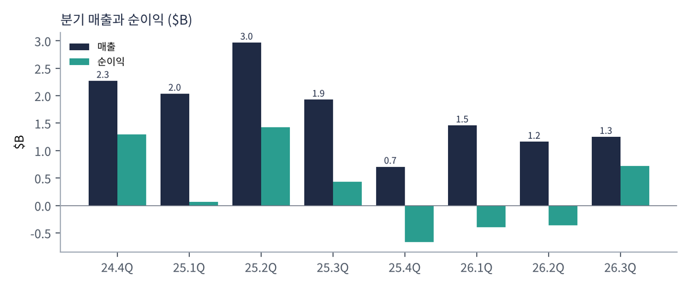
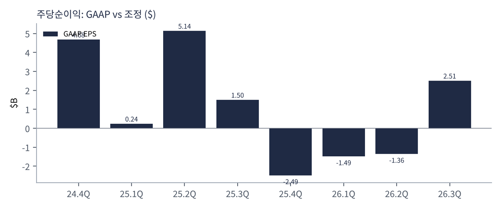
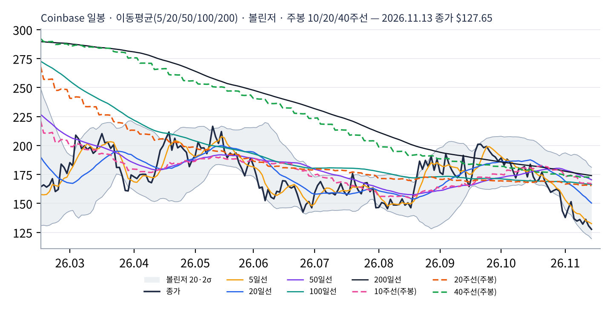
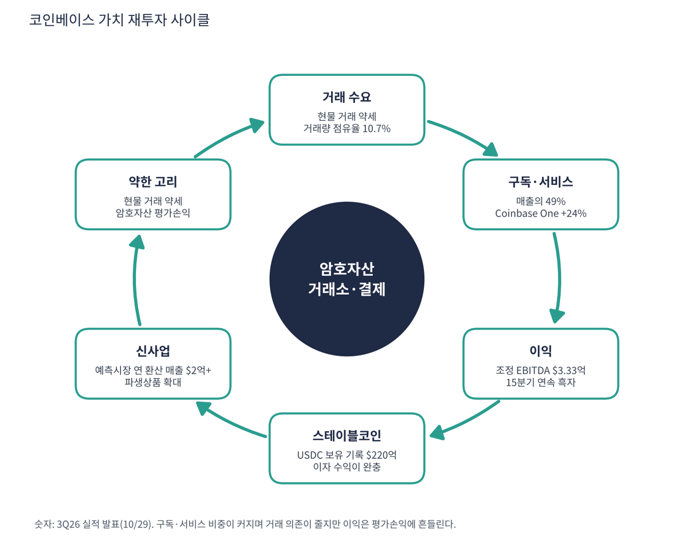

코인베이스는 미국 최대 규모의 상장 암호자산 거래소다. 개인·기관의 현물·파생상품 거래, 스테이블코인 USDC 관련 수익, 구독(Coinbase One)과 커스터디·스테이킹 서비스로 돈을 번다. 3분기 순이익은 $7.19억으로 흑자로 돌아섰지만 영업이익은 $0.62억에 그쳤고, 순이익의 대부분은 보유 암호자산 평가이익($7.15억)이다.
| 항목 | 내용 |
|---|---|
| 종목 | Coinbase Global, Inc. (COIN) · NASDAQ · 암호자산 거래소 · 본사 미국(원격 근무 중심) |
| 밸류에이션 | PER 해당 없음(TTM EPS -$2.83) · P/S 8.2배(스캐너) (11/13 종가 $127.64) |
| 최근 분기(3Q26) | 매출 약 $12.2억(스캐너 $12.5억), 순이익 $7.19억, GAAP EPS $2.51, 영업이익 $0.62억 |
| 조정 지표(3Q) | 조정 순이익 $0.78억, 조정 EBITDA $3.33억(전분기 대비 +60%, 15분기 연속 흑자) |
| 핵심 지표 | 거래량 점유율 10.7%(4분기 연속 상승), 구독·서비스가 순매출의 49%, USDC 보유 기록 $220억, 예측시장 연 환산 매출 $2억 이상 |
| 현금·부채 | 현금 등 약 $89억(스캐너, 고객 자산 포함 여부 미확인), 총차입금 약 $69억, TTM 잉여현금 약 $14억 |
| 비용 전망 | 2026 기술·개발, 일반관리, 영업·마케팅 비용 합계(무형자산 상각 제외)는 2025보다 약간 낮을 것으로 전망 |
| 다음 실적 | 4Q26 실적: 2027년 2월 18일 예정(트레이딩뷰) |
| 직책 | 인물 | 역할·특징 |
|---|---|---|
| CEO·공동창업자 | 브라이언 암스트롱 | '모든 것을 거래하는 거래소(Everything Exchange)' 비전을 주도하며 규제 명확화를 강조 |
| CFO | 알레시아 하스 | 구독·서비스 성장과 조정 EBITDA 연속 흑자를 실적 발표에서 설명 |
경영 스타일: '거래 의존을 줄이고 구독·결제·파생상품으로 넓힌다'. 3Q에는 거래량 점유율이 4분기 연속 올랐고, 예측시장과 파생상품을 새 성장 축으로 키우고 있다. 올해 앞선 두 분기는 손실이었다(2Q 순손실 $3.6억).
현물·파생상품 거래 플랫폼과 커스터디, 스테이블코인 USDC 생태계(발행사 서클과 수익 공유)를 갖췄다. USDC 보유 잔액이 늘면 금리 수익도 늘어난다.
암호자산뿐 아니라 다양한 자산을 한 곳에서 거래하고 결제까지 제공하는 플랫폼을 목표로 한다. 예측시장과 파생상품 확장이 그 일부다.
| 분기 | 매출 | 순이익 | EPS | 조정 EPS | 특이 사항 |
|---|---|---|---|---|---|
| 2024.4Q | $22.7억 | $12.9억 | 4.68 | – | |
| 2025.1Q | $20.4억 | $0.7억 | 0.24 | – | |
| 2025.2Q | $29.7억 | $14.3억 | 5.14 | – | |
| 2025.3Q | $19.3억 | $4.3억 | 1.50 | – | |
| 2025.4Q | $7.1억 | $-6.7억 | -2.49 | – | 순손실(원인 미확인) |
| 2026.1Q | $14.6억 | $-3.9억 | -1.49 | – | |
| 2026.2Q | $11.6억 | $-3.6억 | -1.36 | – | |
| 2026.3Q | $12.5억 | $7.2억 | 2.51 | – | 암호자산 평가이익 $7.15억 포함, 영업이익 $0.62억 |


코인베이스는 조정 EPS를 따로 발표하지 않아 조정 EPS 열은 '–'이다(트레이딩뷰 Reported 값이 GAAP과 같음). 회사는 조정 순이익을 발표하며 3Q26은 $0.78억이다. 3Q26 매출은 스캐너 $12.5억, 회사 발표 약 $12.2억으로 달라 표에는 스캐너 값을 썼다.
흐름 요약: 분기 매출은 $7.1~29.7억으로 암호자산 시장에 따라 크게 흔들린다. 순이익은 암호자산 평가손익 때문에 +$14.3억(2Q25)에서 -$6.7억(4Q25)까지 오갔고, 3Q26은 평가이익 $7.15억 덕에 흑자다. 영업이익과 분기 설비투자의 8분기 값은 구하지 못해 표에서 뺐다.
| 구분 | 3Q26 | 비고 |
|---|---|---|
| 구독·서비스 | 순매출의 49%(약 $6.0억, 내 계산) | 전분기 48%. 스테이블코인 수익·구독·커스터디·스테이킹 등 |
| 거래 수익 | 나머지 약 51%(약 $6.2억, 내 계산) | 현금 거래 약세. 점유율은 10.7%로 상승 |
| 신사업 | 예측시장 연 환산 매출 $2억 이상 | 일일 거래자 전분기 대비 +60% 이상 |
거래 수익이 절반이라 암호자산 가격과 거래량에 민감하다. USDC 보유 잔액이 늘면(기록 $220억) 금리 수익이 거래 부진을 일부 메운다. 금액은 회사 발표 매출 약 $12.2억에 비중을 곱한 내 계산이다.
코인베이스의 방향은 '암호자산 거래소에서 모든 자산·결제를 아우르는 플랫폼으로 넓히는 것'이다.
| 축 | 최근 움직임 |
|---|---|
| 구독·서비스 | 순매출의 49%, Coinbase One 가입자 +24% |
| 신사업 | 예측시장 연 환산 매출 $2억 이상, 파생상품 확대 |
| 비용 | 2026 운영비(상각 제외)는 2025보다 약간 낮을 전망 |
| 주주환원 | 총 $40억 자사주 승인(잔여 규모는 미확인) |

| 이동평균 | 값 | 종가 대비 | 해석 |
|---|---|---|---|
| 5일선 | $132.56 | -3.7% | 현재가가 아래 |
| 20일선 | $150.31 | -15.1% | 하향 |
| 50일선 | $170.39 | -25.1% | 하향 |
| 100일선 | $166.35 | -23.3% | 하향 |
| 200일선 | $174.05 | -26.7% | 현재가가 아래 |
주봉 흐름: 2025년 11월 고점 $304 → 12월 $236~270 → 2026년 2월 저점 $139.4 → 3~5월 $160~222 → 6~8월 $139~191 → 9월 $208 → 10/26 주 급락 → 11/9 주 저가 $125.4(52주 저점), 종가 $127.6.
| 규칙 | 기준 | 현재 값 | 신호 |
|---|---|---|---|
| 장기 추세 필터 | 종가 vs 200일선 | $127.64 < $174.05 | 매도 |
| 중장기 교차 | 50일선 vs 200일선 | $170.39 < $174.05 | 매도 |
| 단기 교차 | 20일선 vs 50일선 | $150.31 < $170.39 | 매도 |
| 돈키언 채널 | 55일 고가 $208.33 / 저가 $125.38 | 중간값 $166.86 아래 | 매도 |
| 1개월 모멘텀 | 21거래일 수익률 | -30.6% (기준 $183.81) | 매도 |
| 3개월 모멘텀 | 63거래일 수익률 | -15.2% (기준 $150.55) | 매도 |
| 6개월 모멘텀 | 126거래일 수익률 | -34.7% (기준 $195.43) | 매도 |
| 12개월 모멘텀 | 252거래일 수익률 | -58.0% (기준 $304.00) | 매도 |
| 종합 (8개 평균) | -1.00 | 강한 매도 |
해석: 8개 신호가 모두 매도로 -1.00(강한 매도). 주가가 52주 저점에 붙어 있어 아래에 지지선이 없다. 14일 ATR $9.43 (7.4%).
| 가격 | 무엇이 바뀌나 | 의미 |
|---|---|---|
| $150.6 상향 돌파 | 3개월 모멘텀(20일선 $150.3 근처) | 매도 → 매수 1개 전환 |
| $166.9 상향 돌파 | 돈키언 중간값 | 55일 채널 전환 |
| $174.1 상향 돌파 | 200일선 | 장기 추세 필터 전환 |
| $183.8 상향 돌파 | 1개월 모멘텀 | 추가 1개 전환 |
| $195.4 상향 돌파 | 6개월 모멘텀 | 추가 1개 전환 |
| 구분 | 가격대 | 근거 |
|---|---|---|
| 저항 1 | $132 ~ 133 | 5일선 |
| 저항 2 | $150 | 20일선·3개월 모멘텀 기준 |
| 저항 3 | $170 ~ 174 | 50일선·200일선 |
| 지지 | $125.4 | 52주 저점(11/13) |
추세 추종으로는 매수 구간이 아니다. 저점 반등을 노리는 역추세라면 $118~130에서 계획 비중의 30%만 진입하고 종가 $110(52주 저점 $125.4 아래) 이탈 시 손절한다. 1차 목표 $150(20일선), 2차 $170(50일선, 내 가정). 20일선 회복 전에는 비중을 늘리지 않는다.
| 악재 요인 | 내용 | 강도 |
|---|---|---|
| 거래 수익 의존 | 순매출의 약 51%가 거래 수익, 현물 거래 약세 | 높음 |
| 평가손익 변동 | 순이익이 보유 암호자산 가격에 따라 +$14.3억~-$6.7억으로 흔들림 | 높음 |
| 영업이익 부진 | 3Q 영업이익 $0.62억 | 중간 |
| 주가 추세 | 52주 저점, 8신호 모두 매도 | 중간 |
| 조정 EPS 부재 | 표준 조정 EPS가 없어 PER 비교가 어려움 | 참고 |
| 티커 | 회사 | PER(TTM) | PEG | P/S | EPS 성장(YoY) |
|---|---|---|---|---|---|
| COIN | 코인베이스 | 적자 | – | 8.22배 | -124% |
| HOOD | 로빈후드 | 35.9배 | – | 14.42배 | -10% |
| CRCL | 서클 | 34.9배 | – | 5.64배 | +0% |
| MSTR | 스트래티지 | 적자 | – | 98.92배 | -383% |
모두 트레이딩뷰 GAAP TTM 기준이다. 암호자산 관련 종목이지만 사업 구조가 달라 참고용이다.
COIN은 현금이 부채보다 많지만 그 현금이 모두 회사 것인지 확인되지 않았다. 스캐너 현금 약 $89억은 고객 예치금 등이 섞여 있을 수 있어 순현금($20억)으로 단정하지 않는다.
| 지표 | 값 | 계산·출처 | 해석 |
|---|---|---|---|
| 현금 등 | 약 $89억 | 스캐너 | 고객 자산 포함 여부 미확인 |
| 총차입금 | 약 $69억 | 스캐너 | 순현금 약 $20억(내 계산, 위 단서 있음) |
| TTM EBITDA | 약 -$12억 | 스캐너 | GAAP 기준, 암호자산 평가손실 반영 |
| 3Q 조정 EBITDA | $3.33억 | 회사 발표 | 연환산 약 $13.3억(내 계산) |
| TTM 잉여현금흐름 | 약 $14억 | 스캐너 | – |
| 기준 | 값 | 비고 |
|---|---|---|
| P/S (스캐너) | 8.2배 | 트레이딩뷰 값 |
| P/S (내 계산) | 약 7.4배 | TTM 매출 $45.8억 — 스캐너와 차이 원인 미확인 |
| P/FCF (TTM) | 약 24배 | 잉여현금 $14억 |
| 동종 | HOOD 14.4, CRCL 5.6, MSTR 98.9 | 11/13 스캐너 |
해석: 적자 기업이 아니라 이익이 평가손익에 흔들리는 기업이므로 조정 EBITDA로 본다. 스트레스 가정(연환산 조정 EBITDA $13.3억·순현금 $20억·주식 2.65억 주 고정, 내 가정): EV/조정 EBITDA 15배면 주가 약 $83(-35%), 20배면 $108(-15%), 30배면 $158(+24%)이다. 현재는 약 24배다.
| 지표 | 값 | 판정 |
|---|---|---|
| PER (GAAP TTM) | 해당 없음 | TTM EPS -$2.83 |
| PER (조정, 3Q 연환산) | 약 108배 | 조정 순이익 $0.78억 ×4 = $3.12억 (내 가정) |
| EV / EBITDA (TTM, GAAP) | 해당 없음 | TTM EBITDA 적자 |
| EV / 연환산 3Q 조정 EBITDA | 약 24배 | EV(차입금 $69억 − 현금 $89억 반영) ÷ $13.3억 (내 계산) |
| 방식 | PER | EPS 성장률 | PEG | 판정 |
|---|---|---|---|---|
| 트레이딩뷰 (GAAP TTM) | – | -124.5% | – | TTM EPS 음수 |
| 조정 EPS 기준 | – | – | 산출 불가 | 조정 EPS를 발표하지 않고 최근 4분기 조정 순이익 이력도 미수집 |
| 3Q26 GAAP EPS $2.51 | – | – | – | 평가이익 $7.15억이 순이익 $7.19억의 대부분이라 성장 지표로 쓸 수 없음 |
판정: PEG는 산출 불가다. GAAP EPS는 암호자산 평가손익이 지배하고, 영업이익은 $0.62억으로 작다. 연환산 조정 순이익 기준 PER 약 108배는 이익 규모가 작아 숫자가 크게 나오는 것이다. 가치 판단은 연환산 조정 EBITDA 기준 EV/EBITDA 약 24배와 P/S로 한다.

사이클은 거래·USDC 수요 → 구독·서비스 매출 → 조정 EBITDA → 신사업 투자다. 이익이 암호자산 평가손익에 흔들리는 점이 약한 고리다.
| 고리 | 현재 숫자 | 고리 강도 | 약해지는 신호 |
|---|---|---|---|
| ① 거래 수요 | 점유율 10.7%, 현물 거래는 약세 | 보통 | 암호자산 거래량 추가 감소 |
| ② 구독·서비스 | 순매출의 49%, Coinbase One +24% | 강함 | 금리 하락, USDC 수익 감소 |
| ③ 조정 이익 | 조정 EBITDA $3.33억(+60% QoQ) | 강함 | 매출 둔화 |
| ④ 신사업 | 예측시장 연 환산 $2억+ | 진행 | 규제 변화 |
| ⑤ 평가손익 | 3Q 평가이익 $7.15억, 4Q25~2Q26 순손실 | 변동 큼 | 암호자산 가격 하락 |
| ⑥ 약한 고리 | 현물 거래 약세, 암호자산 평가손익 | 약함 | 거래 약세 지속 |
구조: 강한 고리는 ②③, 약한 고리는 ⑤⑥이다.